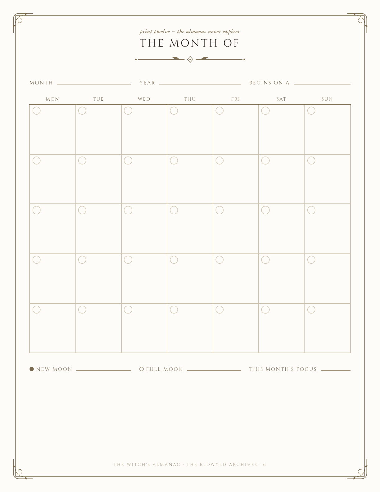
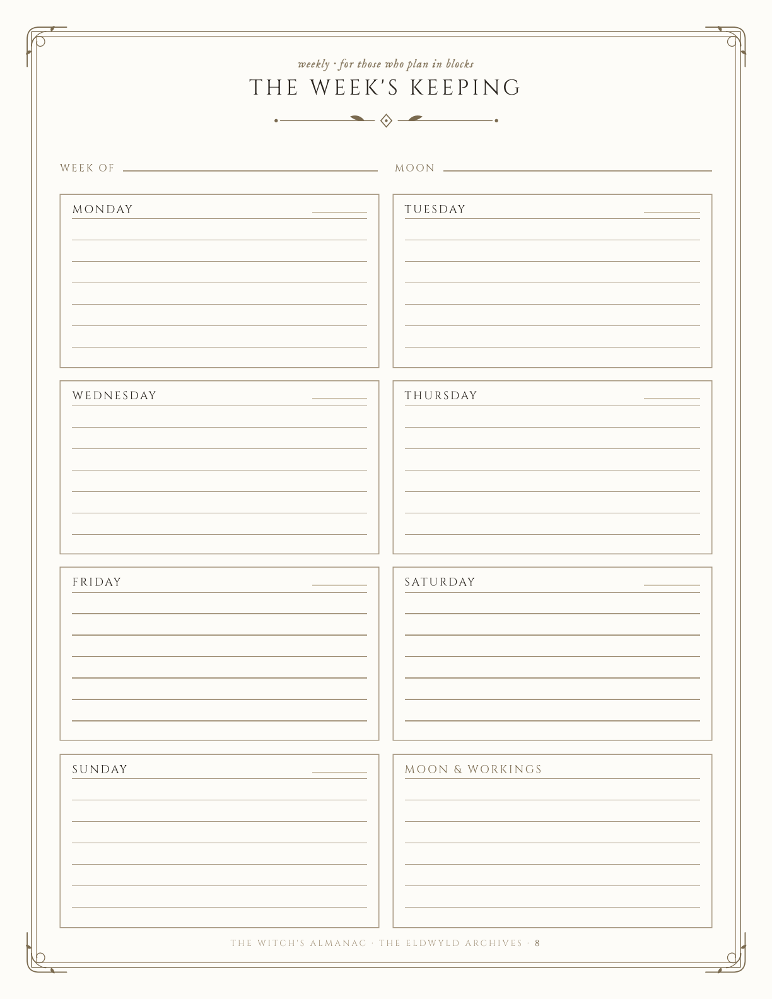
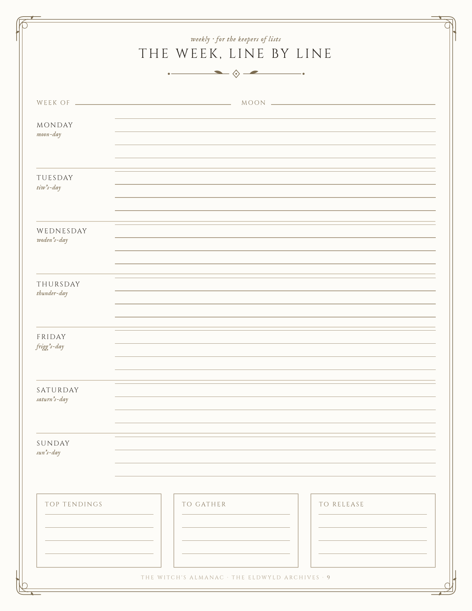
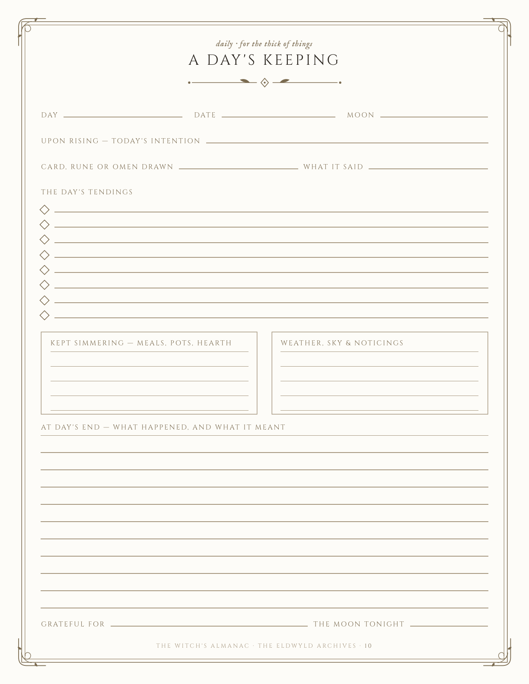
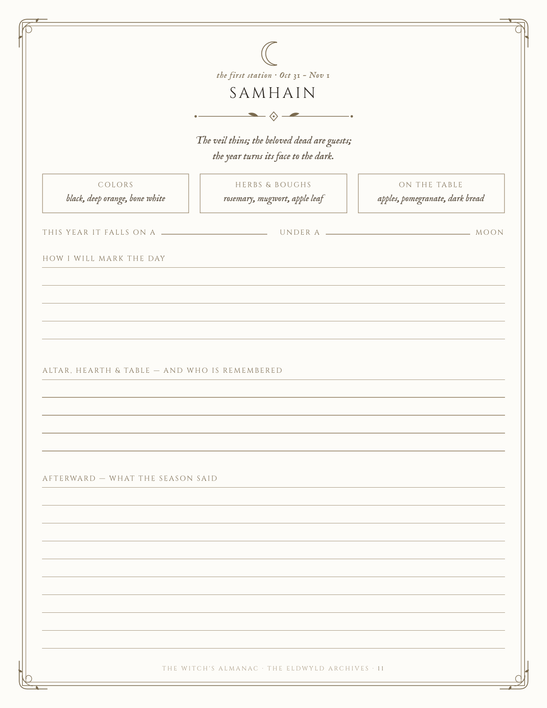
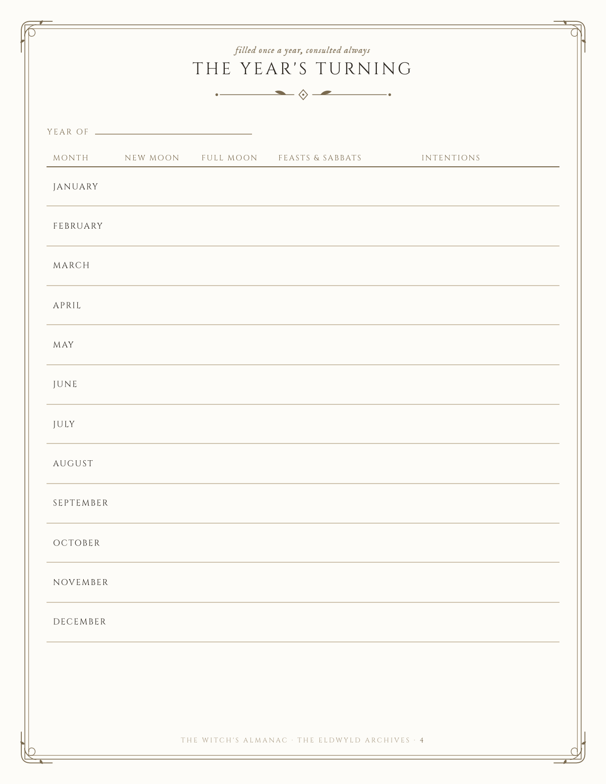
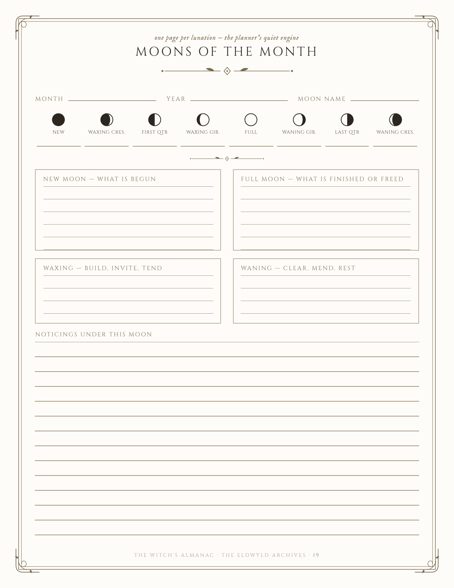
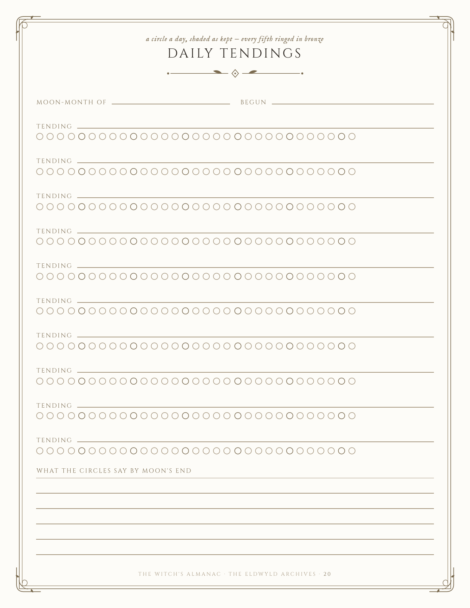

Month Grids
The Witch's Almanac

Month Grids

Weekly — Cards

Weekly — Lists

Daily Keeping

The Eight Sabbats

The Year’s Turning

Moons of the Month

Daily Tendings Tracker
…plus wheel of the year, monthly rising & setting, the week’s rest, and more — 23 pages in all
✦ The Eldwyld Archives ✦